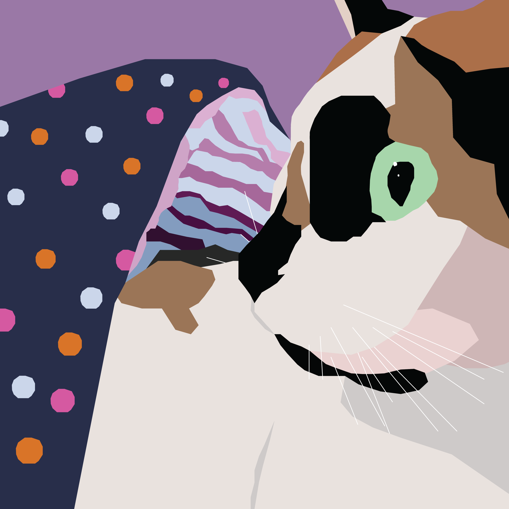
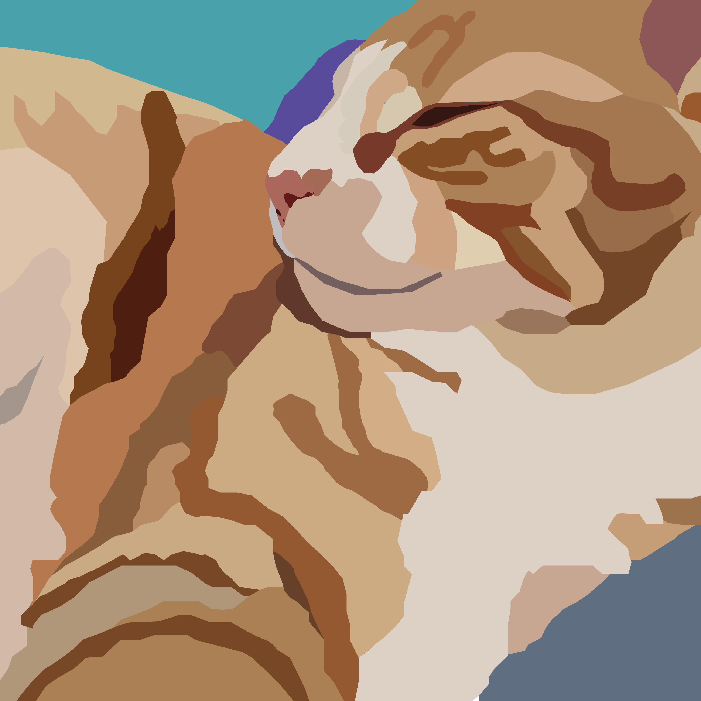
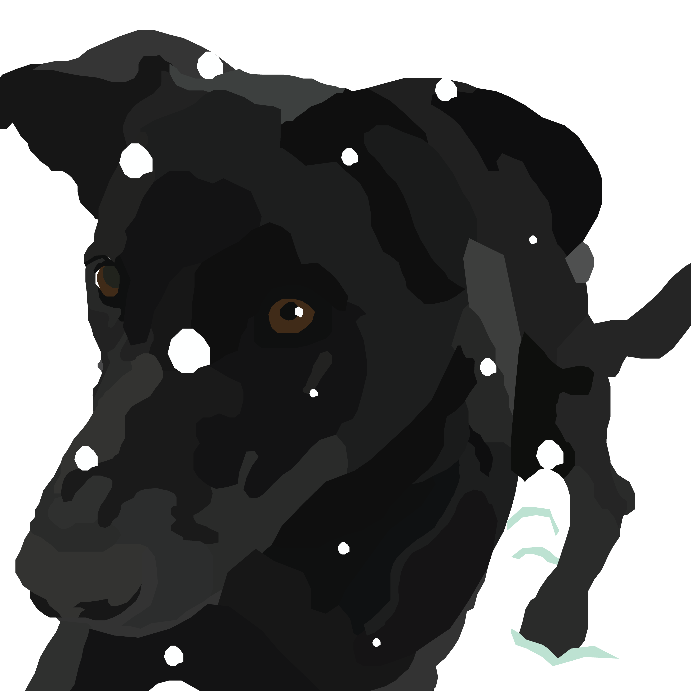
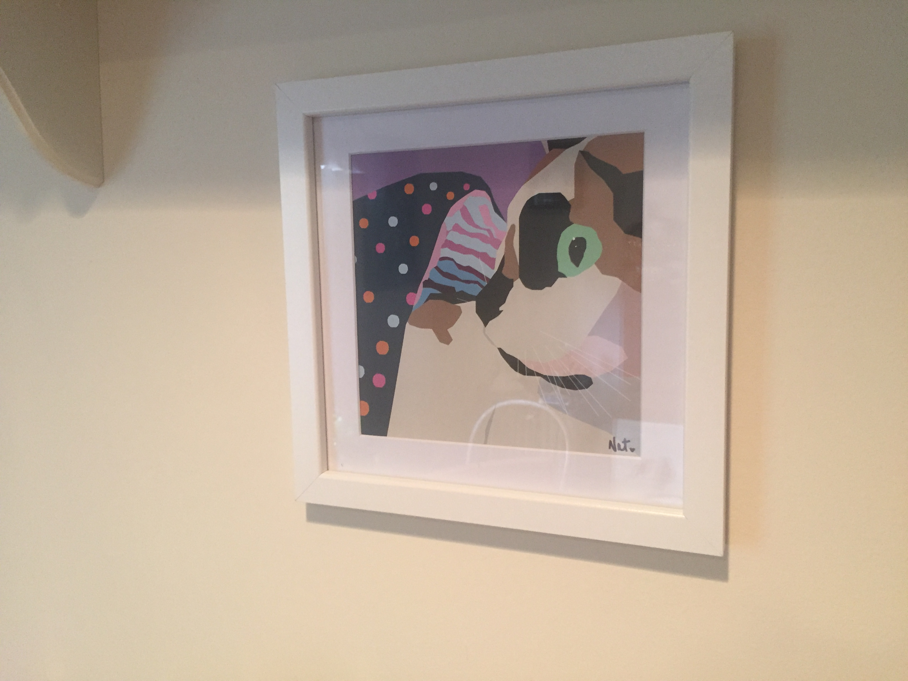

Man's Best Friend
November 2016
Vector art of friends' pets created in Adobe Illstrator.
This series of illustrations was created in part for a class project, but continued as a personal project. To start, I solicited images of my friends' pets. After receiving several images, I went through to decide which would be best to work with in Illustrator. After selecting the six images, I started on my first recreation. This process was extremely time consuming and started by making large "blobs" of color and working into smaller and smaller details.

Robin, my cat
Once the subject had been recreated, it was time to decide what to do with the background. What sat behind the subject could make or break the piece. I had to choose what to include, what to ignore, and what to recolor. By using Illustrator I was able to go through several colors and ideas until I settled on what I liked. The highlights of this series can found below.

Parris' cat

Josie's dog

Robin illustration printed and framed